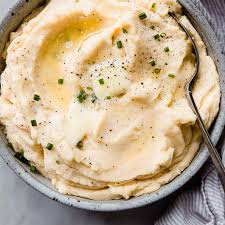

Mashed Potatoes

Cheesy Garlic Mashed Potatoes Recipe
These cheesy garlic mashed potatoes are so delicious, loaded with cheese, sour cream, and heavy cream, and mixed with a melted garlic butter.
Ingredients:
- 6 large russet potatoes, peeled and cut into chunks
- 1/4 cup butter
- 6 cloves garlic, minced
- 3/4 cup freshly shredded Cheddar cheese
- 1/4 cup sour cream
- 1/4 cup heavy cream
- salt and freshly ground black pepper to taste
- 1 tablespoon chopped green onions
Steps:
- Place potatoes in a large pot and cover with salted water; bring to a boil. Reduce heat to medium-low and simmer until tender, about 20 minutes. Drain; mash potatoes with a potato masher.
- Place butter and garlic in a large microwavable bowl. Microwave for 30 second intervals until the butter is melted and garlic becomes fragrant. Stir into mashed potatoes. Add cheese, sour cream, heavy whipping cream, salt, and pepper. Garnish with green onions.